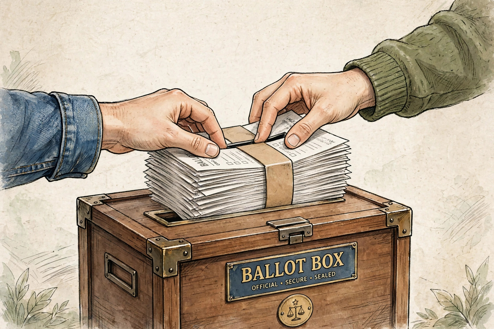

Ballot stuffing

Ballot stuffing or ballot box stuffing is a type of electoral fraud in which one person (or a coordinated group) votes many times beyond their allotted single vote in an election, typically by casting extra, pre-marked ballots into the ballot box or by submitting multiple ballots under false identities.
Methods
In paper-ballot systems, stuffing may involve introducing bundles of ballots marked for one candidate, sometimes facilitated by complicit polling officials. In systems allowing postal or absentee voting, fraudsters may collect blank ballots from voters and submit them completed. The phrase is also used figuratively for online polls and informal votes that are manipulated by repeated voting.
Detection and prevention
Ballot stuffing can be detected through statistical anomalies — for example, turnout far exceeding registration, or impossibly uniform results at a polling station — and through physical checks such as counting ballots against the number of voters signed in. Preventive measures include numbered ballot stubs, transparent ballot boxes, reconciliation of ballot counts, voter rolls checked at the door, and observation by party agents and independent election monitors.
Notable examples
Historically, ballot stuffing was common in 19th-century elections before the adoption of the secret Australian ballot. In modern times, international observers have reported ballot stuffing in a number of elections worldwide, and video evidence of officials adding bundles of ballots has periodically surfaced in widely disputed polls.
See also: Ballot box, Vote buying, Electoral fraud.